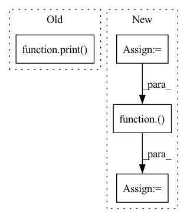

Pattern ID :3
Before Change
res = F.upsample(res, size=gt.shape, mode="bilinear", align_corners=False)
res = res.sigmoid().data.cpu().numpy().squeeze()
res = (res - res.min()) / (res.max() - res.min() + 1e-8)
print( "--> save results: {}".format(SAVE_PATH+name))
imageio.imwrite(SAVE_PATH+name, res)
if __name__ == "__main__":After Change
year={2023}
}
model = Model(om_path, device_id)
print(model)
os.makedirs(save_path, exist_ok=True)
for img_name in os.listdir(data_path):
image, h, w = get_image(
os.path.join(data_path, img_name),
mean=[0.485, 0.456, 0.406],
std=[0.229, 0.224, 0.225])
// put image array into ascend ai processor
image_tensor = Tensor(image)
image_tensor.to_device(device_id)
// infer
out = model.infer(image_tensor)
out = out[0]
out.to_host()
res = np.array(out)
// save results
res = mindspore.Tensor(res)
res = mindspore.ops.Sigmoid()( res)
res = mindspore.nn.ResizeBilinear()(res, (h, w))
res = (res - res.min()) / (res.max() - res.min() + 1e-8)
res = res.asnumpy().squeeze()
imageio.imwrite(save_path+img_name.replace(".jpg", ".png"), res)
In pattern: SUPERPATTERN
Frequency: 3
Non-data size: 4
Instances Fragment ID: 1474
Project Name: gewelsji/dgnet
Commit Name: f82c53433a67c0ed8d98385254a023d800a1335c
Time: 2022-11-18
Author: gepengai.ji@gmail.com
File Name: lib_ascend/inference_om.py
M Class Name: AnonimousClass
N Class Name: AnonimousClass
M Method Name: infer(4)
N Method Name: infer(3)
M Parent Class:
N Parent Class:
M File Name: lib_ascend/inference_om.py
N File Name: lib_ascend/inference_om.py
M Start Line: 41
M End Line: 63
N Start Line: 45
N End Line: 86
Before Change
flat = samples.view(-1)
print( _multinomial_prob(flat, torch.ones(10)))
// plt.hist(flat.int().numpy(), 10, density=True)
// plt.show()After Change
def test_greedy_sampler():
torch.manual_seed(123)
logits = torch.rand(2, 10, 5000)
samples = sampling.GreedySampler()( logits)
assert samples.shape == (2, 5000)
assert chi2_test(samples.view(-1), torch.ones(10) * 0.1)
logits = torch.rand(2, 10, 10000) Fragment ID: 1483
Project Name: cheind/autoregressive
Commit Name: bd9eb01183a89771ea325551b59720b4f8ce0140
Time: 2021-11-11
Author: christoph.heindl@gmail.com
File Name: autoregressive/tests/test_sampling.py
M Class Name: AnonimousClass
N Class Name: AnonimousClass
M Method Name: test_greedy_sampler(0)
N Method Name: test_greedy_sampler(0)
M Parent Class:
N Parent Class:
M File Name: autoregressive/tests/test_sampling.py
N File Name: autoregressive/tests/test_sampling.py
M Start Line: 48
M End Line: 50
N Start Line: 34
N End Line: 46
Before Change
samples = train_dataset.rand_samples(1)
print( "yooooooooooooooooooooooo")
print(samples.shape)
if task_id == 0:
ref_data = samplesAfter Change
// we test transformation on one data point and verify if it is applied
trsf = list_transf[task_id][0]
raw_sample = Image.fromarray(raw_ref_data[0].astype("uint8"))
trsf_data = trsf(raw_sample)
trsf_data = transforms.ToTensor()( trsf_data)
assert torch.all(trsf_data.eq(samples[0]))
Fragment ID: 1484
Project Name: continvvm/continuum
Commit Name: 4772377ba686811674439aca95a82ed81b68f1bd
Time: 2020-07-28
Author: t.lesort@gmail.com
File Name: tests/test_transformation_incremental.py
M Class Name: AnonimousClass
N Class Name: AnonimousClass
M Method Name: test_init(1)
N Method Name: test_init(1)
M Parent Class:
N Parent Class:
M File Name: tests/test_transformation_incremental.py
N File Name: tests/test_transformation_incremental.py
M Start Line: 34
M End Line: 55
N Start Line: 34
N End Line: 64